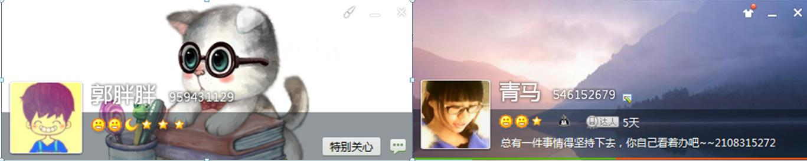

爱 * 轨迹
愿与你温暖相拥
2015
- 憧憬
-
waiting for you ~
2014
- 胖胖
-
爱你
- 亲亲胖胖
-
胖胖，你知道我很敏感不自信，对于给你带来的不快向你道歉
至于你偶尔的不耐心啊，能改就改，改不了我就努力去适应你呗
反正我改正缺点能力比你强，嘿嘿~
意识问题是解决问题的开始，我相信我们都会是更加美好的自己O(∩_∩)O~
- 未来登机牌
-
火星之旅

胖胖，向右看→ →
你不知道从哪里给咱俩弄来的去火星的登机牌
我还等着和你一起去火星呢
- 最奢侈的人
-
世界上最奢侈的人，是肯花时间陪你的人
,
真的谢谢胖胖的陪伴
找工作很烦，可是有你
胖胖，你知道的
我是我工科女，体谅我拙劣的言语
你知道的
喜欢你
感激你
- 找工作
-
胖胖
我每次的选择应该都会让你很纠结的吧
不知道该怎么给我意见，想帮我而不能
想让我更好，又不想让我离你太远
更担心给错我意见...
我怎么会不知道呢
其实无所谓对错了，即使选错了，人生也不会毁了
而且，两个人在一起，原本也应该是互相体谅的，有舍才有得
如果咱俩换位，我会和你一样的纠结
看着对方纠结忙碌，心疼又着急…
抱抱
- 熊孩子
-
胖胖
我是不是就像个坏坏的熊孩子呢~(>_<)~
- 短暂一行
-
亲亲胖胖，来西安匆匆忙忙
辛苦胖胖了
留下的几张反复看了无数遍的照片
- 大猩猩
-
你喜欢它吧
真的很像你呢~(>_<)~
- 小胖马
-
谢谢胖胖的小胖马
喜欢它
更喜欢你
- 纠结
-
惶恐 不安
之后就是暑假了，我有多纠结，痛苦
对于你我有很多不确定，可是喜欢你了= =
胖胖，起初的我不稳定的心情，时不时烦躁的情绪，会不会让你很讨厌我呢…
因为我害怕，对于各种未经历的惶恐与不确定
直至跟你通话之后，觉得我这样既伤害到你，也会自伤
所以努力克制自己内心的不安
想和你好好在一起
在一起就好，能陪伴彼此就好，嗯，就这样。
谢谢傻傻的胖胖
谢谢你
我会和你一样的肯定
- 弥散
-
温暖相拥

后来啊，会经常有事没事想起你
有什么事情不自然会想第一时间告诉你，
开心的或者不开心的
O(∩_∩)O~
胖胖给我的红包O(∩_∩)O~嘻嘻，好开心~
- 世界杯
-
其实我根本不懂那些的额
只是觉得能默默地陪你做你喜欢的事情
想着你挺开心的样子，我也好开心
自己也觉得很满足
- 陪伴
-
某次熬夜写作业，我把所有人想了一遍
也就你有可能晚上不睡觉，看球赛了
亲爱的，谢谢你陪我
让我觉得一直有人陪伴不孤单
- 文化衫
-
胖胖寄来一件南大的文化衫~好开心O(∩_∩)O~
胖，你的字好漂亮！对这些最没有抵抗力了~
看着你们学校那么多文化衫，自己就心里痒痒，也想给自己设计个衣服
嘻嘻，得到胖胖支持还是蛮开心的呢
兴高采烈地去画草图，设计，制作balabla ~
胖胖的点评还是蛮犀利的呢= = 逼格也很高吖，哈哈~
还有哦，给咱俩设计的衣服目前只有草图，还没有设计稿~
改天再继续加工一下，嘻嘻
明年夏天我们一起穿咯~
- 爱生活，爱运动
-
5月份回家的一次打赌~
都喜欢运动，都赞成的一种生活方式
可是为啥米你总是领先于我嘛~~~~(>_<)~~~~
哎呀，看来注定跟在你后面咯~
- 融入
-
胖胖的一滴水两棵树的爱情模式，於我心有戚戚焉~
胖，我和你想的一样
和你一起成长，一起分享，一起承担
一起看好像也并不那么美好的世界
- 时光
-
胖胖读了好多书，好像什么都懂的样子,跟我讲四合院~
你知道吗
最欣赏的就是读书多的娃了
有思想，又自信
- 新年礼物
-
郭特曼打小怪兽
心血来潮，给胖胖画了画像作为新年礼物，谁知道你直接放在人人上面
我说，你能不能低调点啊
你说，就是这么高调。
有种哭笑不得的感觉，嘻嘻，你知道我有多欣赏你这样嘛~自信霸气
其实 有点小小心动O(∩_∩)O~
- 元旦
-
2014-1-1
元旦一个人在教研室瞎玩，还和胖胖聊聊了好一会,
貌似咱俩网络都不是很好，聊得断断续续，幸好咱俩都有耐心吖
可是你跟我说你没有耐心，你知道我那会觉得很诧异吗？虽然现在好像是这么回事的样子，嘻嘻
还有你说的给我那个紫色的大熊啊，我当然记得啦 我印象中是觉得这个新年礼物太贵重了，不敢要
其实我也蛮喜欢的O(∩_∩)O~
2013
- 初见
-
2013-9-7
看到真人版胖胖，觉得胖胖挺重感情的，挺敏感的，而且，超级棒！
和你一起去兵马俑，明明我是东道主，但却是你带我去玩的！
我笨笨的样子，觉得内心略愧疚= =
知道不，当时就在胖胖身上看到我的影子 = =
本来以为你和我一样的敏感不自信，所以你还记得不，后面某次打电话末尾，我跟你说自信点…..= =
现在想想好像是在跟我说的…唉，自己还是好傻的样子= =
喜欢旅行，喜欢读书，爱生活的胖胖O(∩_∩)O~
- 通话
-
暑假某天
暑假的某天下午，我在小山沟沟里支教，下午正带着小孩子们回家，接到你的电话
知道不，其实还蛮开心的呢~
因为觉得你挺有责任感的，还记得我跟你说过我要去南京的事情呢~
- 明信片
-
爱情版
印象中某次，给你寄一套西安分会明信片,
胖胖，你说说哈，当初怎么就给你寄了呢= =
所有的都是上天已经安排好了的么
- 初识
-
2013年初
在南京群里瞎吼一声，无意中碰到了你这娃，还纠正我，叫你老郭
好吧，看在你比我大的份上了~O(∩_∩)O~
之后拉进西安群，然后就和大家熟络起来~
1990
- 马胖胖出生（八月初五）
-
1990.09.23
山西运城，一个名叫"马一萍"的小女孩出生了
1989
- 郭胖胖出生（三月廿九）
-
1989.05.04
山东淄博，一个叫“郭立洋”小男孩出生了